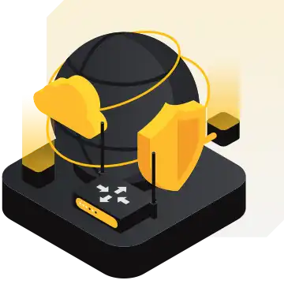
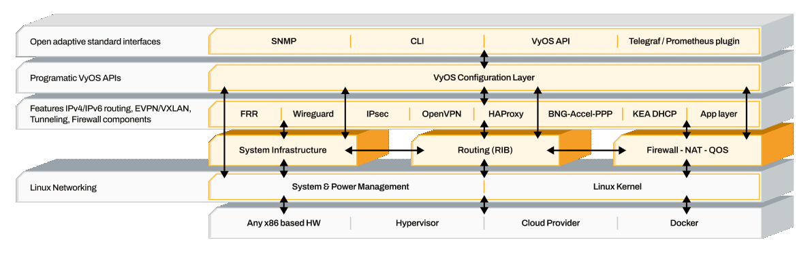

请访问原文链接：VyOS 1.5 LTS - 面向云、边缘及本地环境的企业级软件路由器 查看最新版。原创作品，转载请保留出处。
作者主页：sysin.org
使用 VyOS 1.5 构建高性能网络
VyOS 1.5 LTS 现已可在 Support Portal 下载，并已上线 AWS、Azure 和 GCP 云市场。
VyOS - 面向裸机、云和边缘环境的高性能企业级开源网络平台
VyOS 通用路由器

面向云、边缘和本地环境的企业级网络
专为多租户服务交付、自动化配置和高密度边缘部署而构建。
为什么选择 VyOS？
高性能网络
VyOS 通过现代化的软件定义架构提供企业级网络性能。凭借集成的高性能数据平面以及统一的运维模型，VyOS 在保留完整路由、防火墙和 VPN 功能的同时，实现更高吞吐量和更优效率。
透明且便于审计
通过完整访问源代码，您可以审计、定制并调整网络基础设施，以满足独特需求。信任已融入我们的基因。
面向未来而设计
告别“生命周期终止（End-of-Life）”公告。VyOS 将随着您的业务持续演进，并通过持续更新和全球社区推动创新。
兼顾成本效益与可扩展性
通过单一订阅模式优化您的投资，覆盖所有部署方式，包括裸机、虚拟化以及云原生环境。
功能特性概述
适用于所有网络设备角色
路由
BGP（IPv4 和 IPv6）、OSPF（v2 和 v3）、BFD（BGP、OSPF、IS-IS、静态路由）、RIP（v1 和 v2）、RIPng、IS-IS、基于策略的路由（Policy-Based Routing）、组播路由（Multicast Routing）以及 MPLS LDP 1
虚拟专用网络（VPN）与隧道
IPsec、VTI、VXLAN、L2TPv3、L2TP/IPsec 和 PPTP 服务器、隧道接口（GRE、IPIP、SIT）、OpenVPN（客户端、服务器或站点到站点模式）、WireGuard. +GENEVE
防火墙与网络地址转换（NAT）
有状态防火墙 (sysin)、区域防火墙以及所有类型的源地址转换和目标地址转换（NAT）
核心网络服务
DHCP 和 DHCPv6 服务器与中继、IPv6 RA、DNS 转发、TFTP 服务器、Web 代理、PPPoE 接入集中器、NetFlow/sFlow 传感器、QoS。+IPoE +VRFs 支持 +WanLB
高可用性
IPv4 和 IPv6 的 VRRP，支持执行自定义健康检查和状态切换脚本；ECMP、有状态负载均衡。
自动化友好
原生支持 API（GraphQL）、配置管理/IaC 工具（Ansible/Salt/Netmiko/NAPALM/Terraform）、Cloud-init（自有配置模块）、容器以及 Shell 和 Python 脚本 API (sysin)。
VPP - 高性能数据平面加速
Bonding 接口（layer2、layer2+3、layer3+4、802.3ad、active-backup）、IPv4/IPv6 单播路由、动态路由协议（OSPF+BGP IPv4/IPv6）、VxLAN、GRE、NAT44、CGNAT、IPsec 隧道。
一个网络平台，覆盖所有部署环境
现代网络本质上是分布式的。公有云、私有基础设施、边缘站点、虚拟化平台和裸机环境同时运行。VyOS 通用路由器为所有这些环境提供统一且一致的网络层：
- 相同的操作系统
- 相同的配置模型
- 相同的 CLI 和 API
- 相同的自动化工作流
- 跨租户和区域保持一致的运维模型
无论部署在 x86 硬件、虚拟机管理程序还是云实例中，VyOS 都能在不同环境间保持一致的运维体验。
这消除了平台碎片化问题，降低了培训成本，并简化了网络的长期演进过程。
VyOS 通用路由器架构

专为 MSP、CSP、ISP 和企业网络打造
VyOS 通用路由器为持续性的连接服务和托管网络服务提供底层基础设施支撑。
基于 EVPN、VRF 和 MPLS 的多租户路由与网络隔离
具备 CGNAT 和宽带功能的高密度服务节点
跨区域标准化边缘部署 (sysin)
使用 Terraform、Ansible 和 API 工作流实现自动化配置
通过 VRRP 和状态同步实现高可用服务集群
不受硬件限制的云原生网关基础设施
企业级与运营商级路由技术栈
VyOS 通用路由器并非精简版软件路由器。它提供完整的企业级和服务提供商级路由技术栈。
✓ 高级路由
适用于可扩展核心网络和跨区域网络架构
BGP（IPv4/IPv6、Unnumbered、MP-BGP LU）EVPN-VXLAN 和 EVPN-MHRPKI 验证OSPFv2 / OSPFv3ISISOpenFabricBFDECMP完整策略路由（PBR）组播（PIM-SM、IGMPv2/v3、MLD）
✓ MPLS 与 Segment Routing
适用于业务承载和流量工程
支持 LDP 的 MPLSSR-MPLS 和 SRv6L3VPNv4 / L3VPNv6MPLS over GRE标签分配与同步
✓ 大规模 NAT 与宽带功能
适用于高密度边缘和接入场景
CGNAT / NAT444NAT64 / NAT66 / NPTv6PPPoE（客户端与服务器）IPoE ServerRADIUS 集成面向 BNG 环境的 QoS 与流量整形
VyOS 通用路由器的典型应用场景
VyOS 已部署于对性能、灵活性和运维一致性有严格要求的环境中：
云与混合云网络网关
宽带接入网络
高可用路由集群
自动化多环境基础设施
MPLS 与 EVPN 网络架构
边缘与区域汇聚
运营商级 NAT 部署
下载地址
VyOS 1.5 LTS Platforms
Bare Metal
- dell
- supermicro
- advantech
- lanner
Virtualized
- hyper-v
- kvm
- nutanix
- oracle-olvm
- oracle-linux-kvm
- vmware
- xcp-ng
- redhat-openshift
Cloud
- aws
- aws-outpost
- azure
- azure-stack-hub
- google-cloud
- oracle-cloud-infrastructure
- Oracle Private Cloud Appliance
- flow-swiss
- openstack
- exoscale
Edge
- dell-native-edge
- zededa
- equinix-network-edge
更多：Linux 产品链接汇总

文章用于推荐和分享优秀的软件产品及其相关技术，所有软件提供免费版或试用版。内容若侵犯了您的版权，请联系作者删除。如果您喜欢这篇文章，或者觉得它对您有所帮助，亦或发现有不当之处；欢迎发表评论，也欢迎分享这个网站，或者赞赏一下，谢谢！提示：捐赠或赞赏属于自愿赠予行为，提交后即表示您对作者的支持与认可。为避免误操作，请在确认前仔细检查金额，支付完成后将无法撤销或退还。
 支付宝赞赏
支付宝赞赏  微信赞赏
微信赞赏赞赏一下
敬请注册！点击 “登录” - “用户注册”（已知不支持 21.cn/189.cn 邮箱）。 请勿使用联合登录（已关闭）。